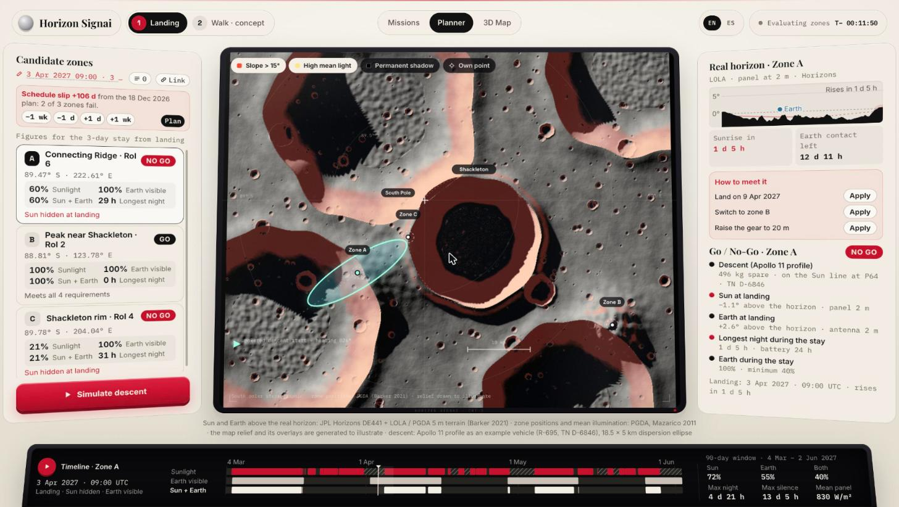
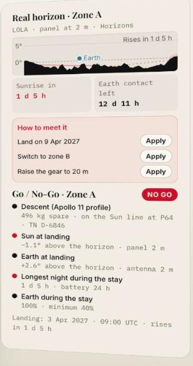
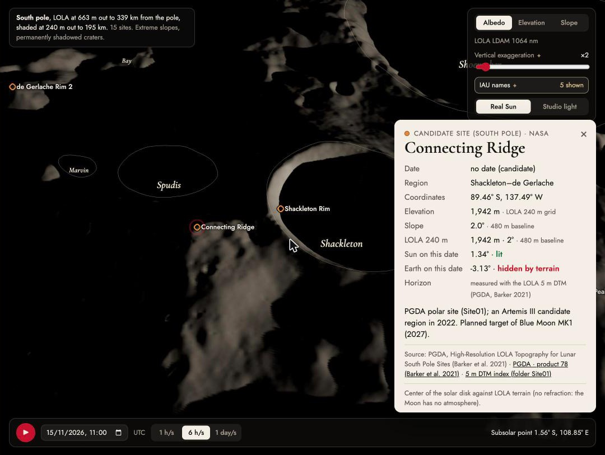

Find light. Keep contact. Compare lunar south pole landing sites and dates, with the Sun and Earth measured against the real horizon.
Team Hinomaru Signal · Lima, Peru
Estephano Orbegoso Franceschi · Francisco Daniel Gonzales Vargas · Manuel Antonio Espinoza Melgarejo
Jean Pierre Alcantara Mestanza · Angel Baldeon · Jefferson Erick Abendaño Cordova
A lander at the Moon's south pole needs the Sun for power and Earth for a direct radio link. There, both sit at the horizon, so a ridge can hide either one for days.
Mission planners have to answer this again every time a schedule moves. We made it one screen.



| NASA data | What it does here | How it was checked |
|---|---|---|
| JPL Horizons, DE441 ephemeris, 2026 to 2030 | Where the Sun and Earth are, from any site and date | Against Horizons queried directly for two sites: worst difference 0.0065° |
| LRO LOLA terrain: 5 m south pole models (PGDA) and 240 m polar grid | The real horizon of each site | Sunlight at Connecting Ridge over 18.6 years: 36.6%, published maps give 38.5% (Mazarico et al. 2011) |
| NASA TN D-6846, Apollo 11 descent plan | Example vehicle for the descent simulation | Touchdown at 712 s; the report plans 714 s |
| NSSDCA landing records, Blue Marble | The 62 sites and the Earth of the 3D Moon | A script compares the map with the NASA catalogues |
Nothing is queried live: each product is downloaded once by a script and stored with its provenance. The engine's own suite ran 113 tests with 0 failures; the app keeps its own tests of the key cases.
Re-check a site and date the moment the schedule moves, and send the scenario to the team as a link.
One set of figures and definitions for both: light, link, longest night, longest silence.
EVA, a guide robot, gives each visitor a guided tour, answers from the project's own notes and can run the planner when asked. In English or Spanish.
Next: 5 m horizons for every candidate region, real LOLA relief inside the planner map, and a 3D rehearsal of the days on the surface.
↑ ↓ or space